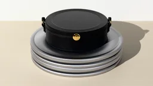
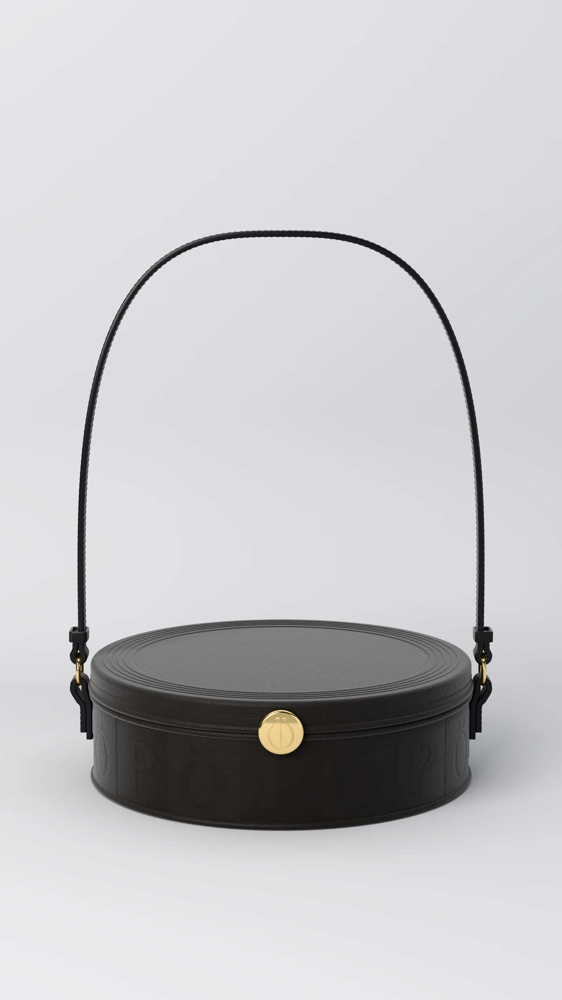
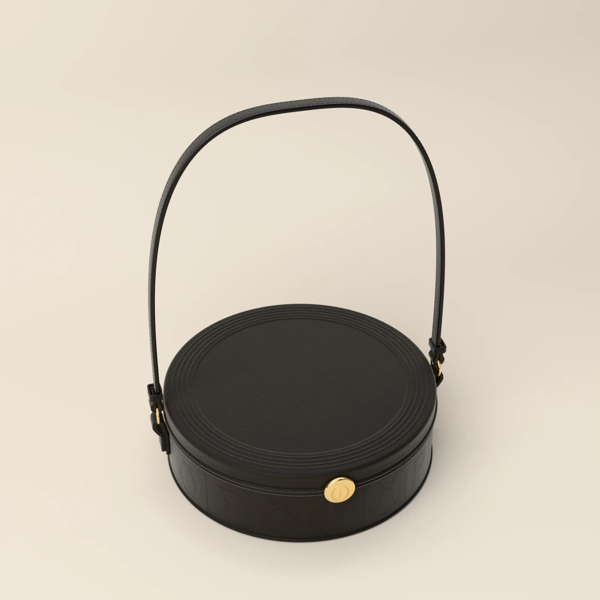
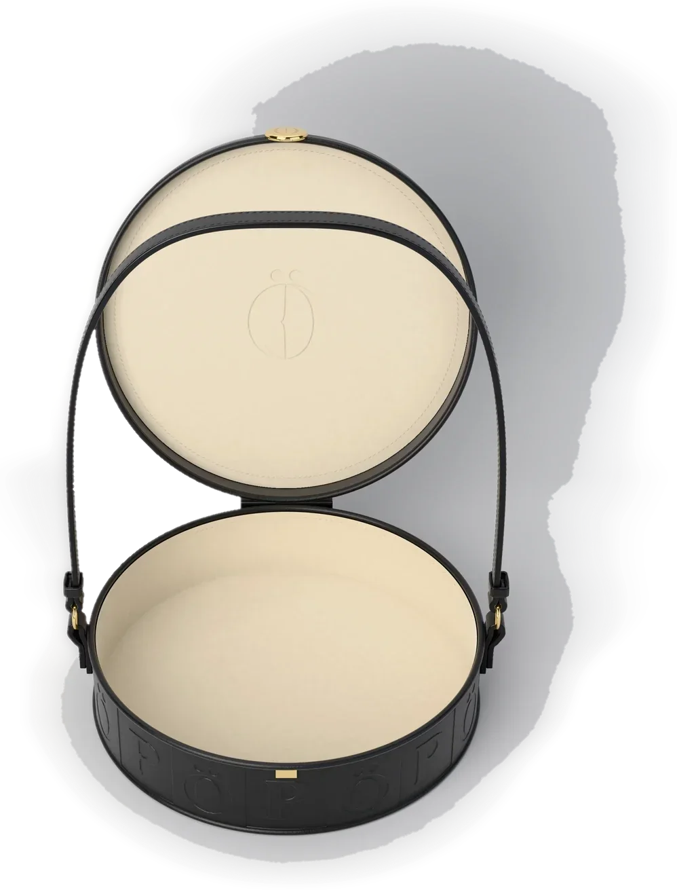
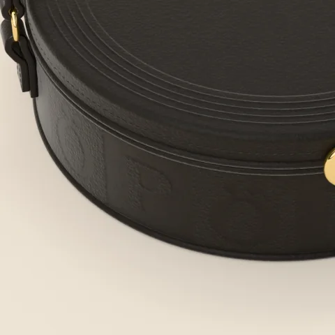
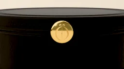

STAND-IN · img/voluta/hero/master.* (the director’s signature shot: The top can: the bag on a stack of wider film-reel cans (story/product-stills/DIRECTOR-SHOTS.md; its 144p preview stands in); 8K, 7680 × 4320)Chapter I · Bags
Voluta
Round bag

front

STAND-IN · img/voluta/three-quarter/master.* (three-quarter view, 8K; 8K, 7680 × 4320)three quarter

STAND-IN · img/voluta/open/master.* (open view, 8K; 8K, 7680 × 4320)open
Chapter I
Voluta
Round bag
A film can, kept in black calfskin. Round, closed by a gold clasp, the PÖ pressed into its band, and inside, cream suede where the reel would be.
- LEATHER
- BLACK CALFSKIN
- DIMENSIONS
- 22 × 7 CM
- LINING
- CREAM SUEDE
- CLASP
- GOLD
USD 2,200 pre-sale USD 1,850
Made to order.
Keep a seatThe register sees the pre-sale first.
Details
- Pre-sale
- Made to order. We email your delivery date once production is confirmed. Cancel for a full refund any time before production starts.
- Returns
- Exchanges within 14 days of delivery, unused and with tags.
- Care
- Wipe with a soft dry cloth. Keep from rain and heat; if it gets wet, let it dry slowly away from a radiator. Store in its dust bag, stuffed with tissue, out of the light. Leather cleaning by a specialist only. Care
- Size
- The measurements
Close, at 100%
 STAND-IN · img/voluta/detail-material/master.* (the calfskin, 8K close-up; 8K, 7680 × 4320)
STAND-IN · img/voluta/detail-material/master.* (the calfskin, 8K close-up; 8K, 7680 × 4320)The calfskin
 STAND-IN · img/voluta/detail-clasp/master.* (the clasp, 8K close-up; 8K, 7680 × 4320)
STAND-IN · img/voluta/detail-clasp/master.* (the clasp, 8K close-up; 8K, 7680 × 4320)The clasp

STAND-IN · img/voluta/detail-band/master.* (the pressed band, 8K close-up; 8K, 7680 × 4320)The pressed band

STAND-IN · img/voluta/detail-site/master.* (the clasp and the band, close, 8K close-up; 8K, 7680 × 4320)The clasp and the band, close
In the world
 STAND-IN · img/film/short-c13/master.* (C13, Voluta: the coming attraction (until it lands, its last frame); 16:9, 3840 × 2160 MP4 or 8K still)
STAND-IN · img/film/short-c13/master.* (C13, Voluta: the coming attraction (until it lands, its last frame); 16:9, 3840 × 2160 MP4 or 8K still)C13, the coming attraction
How it is made
- It begins as a circle of black calfskin: 22 cm across, 7 cm deep.
- Sixteen squares are pressed round the side band, 0.4 mm deep, each 43.2 by 44.9 mm.
- The lid is pressed with four fine rings and hinged at the back on a leather strip.
- It closes at the front on a round gold disc, 24 mm.
- The strap is 12 mm wide and folds through a gold ring on each side.
Inside it: cream suede, and the mark pressed 0.8 mm into the suede of the lid.
In the same scene